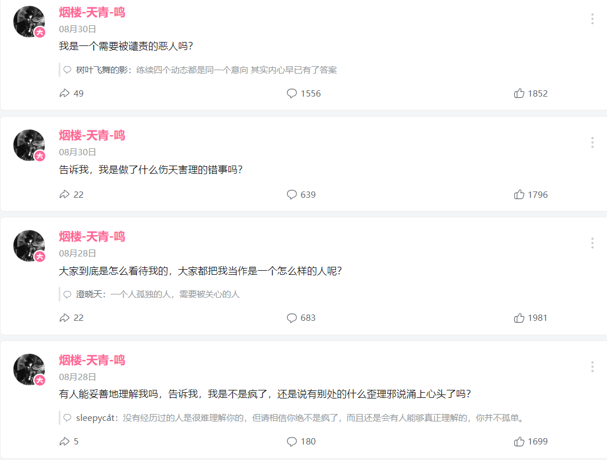
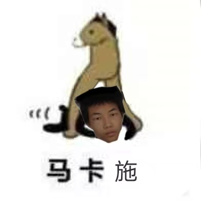

| 编辑协助
本页面受涉及人物相关事件受面过多，若有知情人士可对邮箱投稿 |
| 当前事件
截止2025年11月，此页面记载的恶俗人士仍然在高强度活动。 |
| 名师出高徒
师徒二人卧龙凤雏 |
| 权限狗
此人是个十足喜欢滥用任何一点权限的野狗 |
施遇卿，弱智圈钱窝囊废。
作为名师出高徒的名师，他的圈钱能力和犯贱能力广大人民群众有目共睹。
烟楼-天青-鸣，真实姓名为施遇卿，生日为2001.8.12，性别为XX/XY嵌合体，
据说没有贤者时间，自我满足的方式是抚摸肚子，最高记录是一天5次。由于是嵌合体，身高160cm，身体多处器官发育不全。兴趣爱好曾经或是现在包括但不限于打篮球，编程，解密，玩游戏（尤其是东方Project），玩黄油，看里番，整理黄油与里番。最喜欢的人物是古明地恋，最喜欢的里番是少女波子汽水。
曾经养过一只猫，后发病将其亲手杀死。
有人格分裂。
上海崇明人，高中在崇明中学就读，大学在中国矿业大学就读。高中时曾经有过女友 为了高考导致感情破裂，进而导致大学生活变得消极，后因为严重的抑郁症中途辍学。父母尚健在，但却宣称其已逝。
18年左右（推测）曾经从五楼跳下，损伤了部分大脑功能，抑郁症也大幅恶化。
19年前主要以mtohoem身份活动，19年中发布了95版，后续完成终极修改器以及一些pvz修改的工具的制作，20年发布视频和部分动态，宣布彻底退出pvz圈以及相关的人员交际。并发布动态，批判曾经麻烦过或者曾求助过自己的人士，包括现今部分知名的pvz圈up主，
之后在动态长期发布扫雷，谜题，密码相关的内容。
20年6月建立qq群聊，群里实行高压严格的管制，自己用小号扮演一个管理：风信子（设定是与天青非常好的朋友除了性别几乎一模一样），实行残忍暴戾的管制，禁止几乎一切不入耳的言论。群规只有两条：第一条，别惹我生气；第二条，别把群搞封。
经典的例子是曾经有一个被家暴的女孩子来群里寻求帮助，自述爸爸喝醉了就对她与母亲实行家暴，结果被踢出群，并被他佐以恶毒的咒骂。后续群里死气沉沉。（通过他对待这件事情的态度可以发现，除了我们亲眼看到的，在不知道的地方他做过类似的恶劣的事情可能更多。）
21年3月，在群里自爆自己隐私，包括性别，包括家庭（父母双亡只是天青这个角色的设定，和风信子一样），实际上是和父母关系不好单方面不认他们，住在远房亲戚家。（自己说祖宗八辈都死完了，这也是人物设定）除此之外，编造四个人即mtohoem（立心白）、天青、风信子、梁丘子夜四个人通过发送随机邮件相识的谎言，在群中一人分饰五角进行故事接龙。
关于四个人的设定均为虚拟。实际上，他们都是他一个人。
梁丘子夜：一切的主使者，神秘莫测，是天青的师傅，曾经教给他许多东西，性格傲慢，不轻易露面（也是招聚四个人的那位），在ｂ站发布4卡过95版5-4的就是他。（也是sh5密码的始作俑者，后续由天青完善）
mtohoem：曾经的立心白，现在的莉莉，也是pvz吧常说的崇明人家123，和天青是很好的朋友，两个人合作完成了95版。mtohoem提出制作的想法，天青负责完成制作。
风信子：和天青在网络上认识的某人，二人的性格惊人地相似，宛如一人一般。是男性，负责群内的管理，也是天青最好的朋友，就连帐号都共同使用。所有辱骂，踢人，禁言等等，不光彩的工作都由他代替天青完成。
关于群内的事情：群名叫做暗夜的镇魂曲，群内组织接龙小说同名，《暗夜的镇魂曲》。要求群友一同参与其中，参与小说的编写。不过对除了风信子和天青以外的其他人有严厉的审核，不符合规矩的部分会被删改之后再发布。群内禁止表情包，谈论关于pvz，以及可能会导致群主不高兴的话题。违反者会被风信子言语攻击，禁言，或踢出群。途中进行了大规模的人员更换（主要是上述原因，基本都由风信子执行），之后使用了自创的sh5密码设置了入群密码，于是群内成员渐渐不再变化（没人能进来）。小说的编写过程中，部分群员由于学习，工作等原因，无法及时完成群主分配的工作，产生过矛盾和冲突。在刚开始的阶段，小说进行得比较顺利，后续开始渐渐蹉跎。期间为了缓解尴尬，决定将部分完成的小说发布到ｂ站。由于管理的方法存在问题，群主的失望和群友之间交流的障碍与日俱增，最终小说烂尾，后续天青本人也放弃再续写。
21年4月16日，群被解散。同年同月同日，CNR成立，部分群员转移进CNR。
在那之后在ｂ站的动态中，批评和挂人私信的频率开始逐渐增加，这段期间开始出现大家熟知的人物，例如文女九天的视频中被挂的那些人。到了22年，挂人的趋势愈演愈烈。
此外，22年还有一位重量级的人物，嘻哈宙帝。和天青一直纠缠，直到22年9月，天青发布十年之约动态，宣布退网。在CNR中宣布决定不再颓废并寻找工作。
但实际上是以另外的帐号继续活动在资源侠，某一些频道以及国外资源网站，结交认识新的朋友并且建立了新的群聊，更名为立心白，后改名为莉莉。途中一直致力于整理黄油与里番，以立心之白的身份将资源分享出来。目前该账号已在b站被封禁。
由于一直以来坐吃山空（从天青时期就已经开始）到了山穷水尽的地步（即花光所有积蓄），不得以重新登陆了天青的帐号，以95版作者的身份请求网友的帮助。由于使用的手段有部分争议，引起了互联网上的一些风波。私底下在qq群内对于给他捐钱的人，态度仍旧趾高气昂。
大概率出于抑郁症的原因，对于想要给他提供帮助的人，总是冷漠相待。比如阅鸣。现在有所改善，以前更甚，常常恶语相向。
杜英曾非常喜欢天青，他们曾相见恨晚，但在那时被拒之门外。他在大家都帮助他，捐钱的时候，没有想着感谢他们，而是忙着整理自己的黄油资源，对众人的帮助漠不关心，仿佛是应得。对于之前的老群友，不知他内心如何，至少外表冷漠。一边借助因为95版而来的善意，一边和95版作者身份切割。
专业总结：
1. 冥谷川恋的父母还在，自己却说死了
2. 别人在群里诉苦就要被骂
3 .要求群友参与小说的编写，但是却有严格审核，禁止说让群主感到不开心的事、pvz、表情包，编写小说的时候产生过矛盾与冲突，但最后烂尾
4. 群解散后，有的群友被转移到cnr，后面批评和挂栏私信又多了很多，后续又挂人
在此之中，嘻哈和天青一直纠缠，最后天青宣布退网，后续在资源网站结交新朋友，后续在平台上以立心之白分享黄油里番
5. 因为没有找工作，导致没有钱，所以为了捞钱，又回到了b站，之后在寻求网友的帮助下来，以其拿到捐款的钱，然后在私底下给他捐款的人的态度仍旧是耻高气昂，想给他帮助的人总是以冷漠的态度处理，之前的他恶话很多，喜欢他的人却被拒之门外，对于捐钱的人并没有想过感谢，依然在搞黄油，自己就以95版作者的身份来进行切割，最后被网友扒出是在骗钱。

二次总结：
1.施遇卿圈钱诈骗已实锤，妥妥的畜生。
2.至今仍有恋卫兵，冥孝子妄图颠倒黑白，搬弄是非，然而他们都将被淹没在愤怒的群众们的汪洋大海。
狗窝：上海崇明堡镇财贸村石桥229
